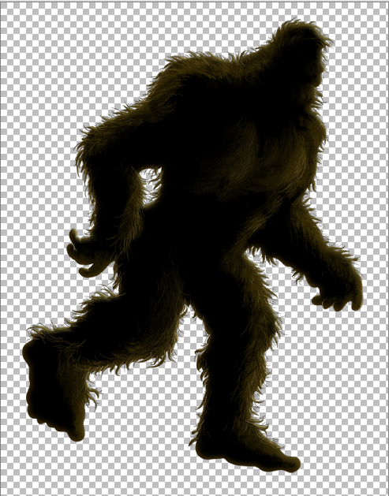
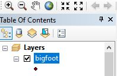
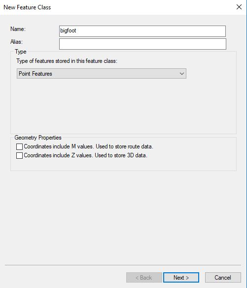
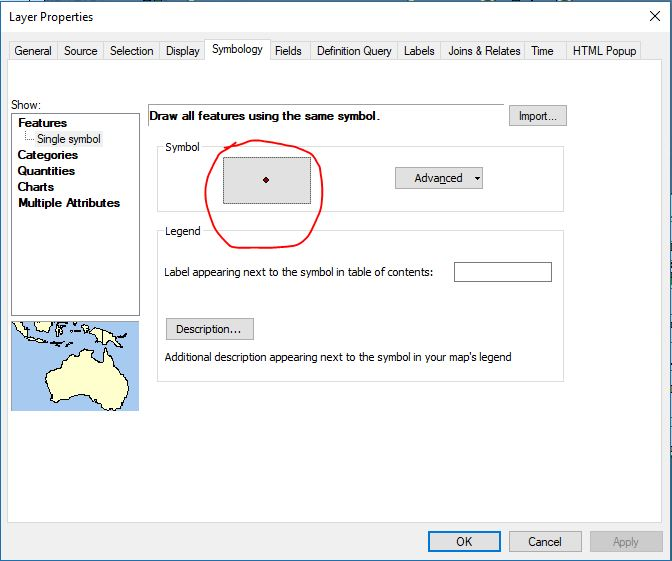
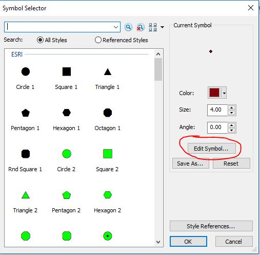
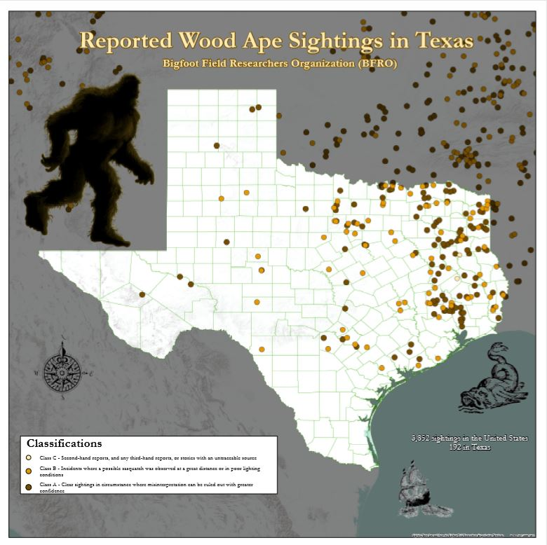

How to add transparent images to your ArcMap Desktop layout
2018-09-25
ESRI ArcMap Desktop is one of the most common GIS Desktop analysis and editing programs out there. It has a newer, 64bit sibling now available that is capable of all sorts of new tricks but the reality is that a large portion of ESRI consumers still use ArcMap rather than the ArcPro for numerous reasons (none of which concern me or this blog). The problem then arises; ArcMap is still a 32bit program and when you want to make some cool maps with transparent graphics the program simply won't let you export or print to PDF these transparent images... unless you know a trick.
Backstory
I'm a web developer but come from a GIS Analyst background. I haven't used ArcMap a few years but when the opportunity arose to submit a map to a poster competition I was compelled to participate. I hopped onto ArcMap to make the map but ran into trouble when trying to get it onto paper. Exporting to an image (tif, etc.), exporting to a PDF, and printing to a PDF all resulted in uglyness where transparency should reside. Googling around you will find lots of "it is not possible to use transparent images in the ArcMap layout". They were wrong and this is how I made it happen. It is not convenient by any stretch but it works in a pinch.
-

Open your MXD with that fancy-pants pretty map in it that you want to add transparent images to. In the Catalog window, create a new shapefile or feature class in your workspace. I was using a file geodatabase for all my data so I just created a new Feature Class called 'bigfoot' in it. This is should be a point geometry and in the same projection as your map. Fields don't matter so don't waste your time declaring any. Then add the new shapefile/feature class to your map.
 -
Right click the layer, select 'Properties'. When the window opens, choose the 'Symbology' tab and click the point symbol in the little, outlined 'Symbol' section.
 -
In the new 'Symbol Selector' window, choose to 'Edit Symbol'.
 - The 'Symbol Property Editor window' will appear. In the dropdown at the top center, choose Picture Marker Symbol. The file chooser window will immediately appear. Navigate to your transparent (I've tested PNG format and can confirm it works) image and select it. Inside the Symbol Property Editor window you'll see your image on display. It will probably be super small so you'll need to enlarge it based on it's context in placement on the layout of the map. Bigfoot required a good size of "800"; but then again, he's bigfoot. Click okay to set the symbol and get out of all these windows.
- Start 'Editing' on the layer. This is probably best done in the 'Layout' view of the MXD since it's all aesthetic and relative to the pretty map stuff. The 'Template' sidebar should be open to facilitate this - standard editing of layers here. Drop a new point where you want the graphic/image to be. Since we've already set the symbology it should give us a fuzzy little preview as we move the cursor around.
- When you've placed your new image point, just 'Save Edits' and then 'Stop Editing'. Of course, you can delete the point if the placement is bad and try again. Or add a bunch of points if you want the image in multiple locations. Or edit the symbol size if you'd like to adjust the image size.
- Save your MXD and export/print! It is suggested you export/print to PDF and then print that file rather than export to an image format (ex. TIF) for printing or printing directly from ArcMap... the quality is much, much higher coming from a PDF.
One downfall is this requires a new feature class for every image but keep in mind this is a 'trick' workaround. "If it was easy, it would just be 'the way'."
